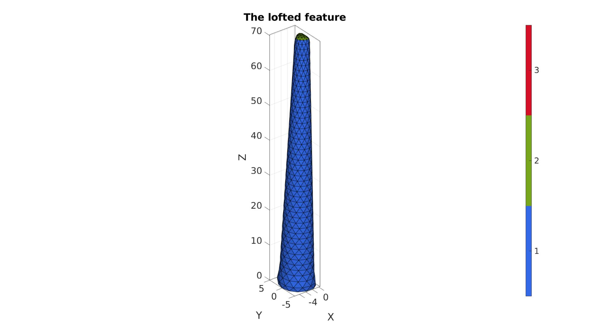
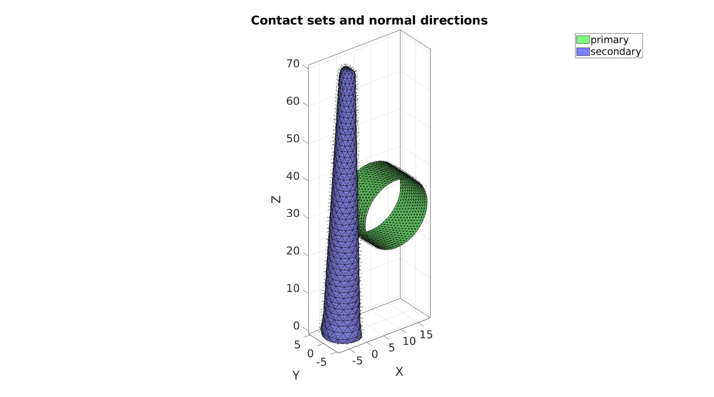
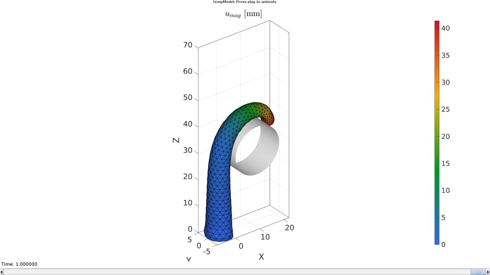

DEMO_febio_0045_tentacle_active_contraction_01.m
- Creating geometry for a basic tentacle model
- Assigning fiber directions
- Defining the boundary conditions
- Coding the febio structure
- Running the model
- Importing and visualizing results
Contents
- Keywords
- Control parameters
- Creating a loft feature
- Tetrahedral meshing using tetgen (see also runTetGen)
- Visualizing mesh using meshView, see also anim8
- Split into two materials
- Joining node sets
- Define contact surfaces
- Defining the FEBio input structure
- Quick viewing of the FEBio input file structure
- Exporting the FEBio input file
- Running the FEBio analysis
- Import FEBio results
Keywords
- febio_spec version 4.0
- febio, FEBio
- pressure loading
- tetrahedral elements,
- tetgen
- static, solid
- hyperelastic, Ogden
- displacement logfile
- stress logfile
clear; close all; clc;
Plot settings
figColor='w'; figColorDef='white'; fontSize=25; markerSize1=25; lineWidth1=3; faceAlpha=0.5; faceAlpha2=0.25; vectorPlotSize=0.5; markerSize=25;
Control parameters
% Path names defaultFolder = fileparts(fileparts(mfilename('fullpath'))); savePath=fullfile(defaultFolder,'data','temp'); % Defining file names febioFebFileNamePart='tempModel'; febioFebFileName=fullfile(savePath,[febioFebFileNamePart,'.feb']); %FEB file name febioLogFileName=[febioFebFileNamePart,'.txt']; %FEBio log file name febioLogFileName_disp=[febioFebFileNamePart,'_disp_out.txt']; %Log file name for exporting displacement %Material parameter set k_factor=10; %Bulk modulus factor c1=1e-3; %Shear-modulus-like parameter m1=2; %Material parameter setting degree of non-linearity of ground matrix ksi=c1*1000; k=c1*k_factor; %Bulk modulus T0=5e-3; %Active stress k_factor=100; %Bulk modulus factor c1p=c1*10; %Shear-modulus-like parameter m1p=m1; %Material parameter setting degree of non-linearity kp=c1p*k_factor; %Bulk modulus % FEA control settings numTimeSteps=25; %Number of time steps desired max_refs=40; %Max reforms max_ups=0; %Set to zero to use full-Newton iterations opt_iter=10; %Optimum number of iterations max_retries=5; %Maximum number of retires dtmin=(1/numTimeSteps)/100; %Minimum time step size dtmax=1/numTimeSteps; %Maximum time step size symmetric_stiffness=0; runMode='external';% 'internal' or 'external' tentacleHeight=70; % Bar barRadius=9; barLocation=30; %Contact parameters contactPenalty=1; laugon=0; minaug=1; maxaug=10; fric_coeff=0.5;
Creating a loft feature
% Sketching profile 1 ns=15; t=linspace(0,2*pi,ns); t=t(1:end-1); r1=5; x=r1*cos(t); y=r1*sin(t); z=zeros(size(x)); V_bottom=[x(:) y(:) z(:)]; V_bottom(x>(r1/2))=(r1/2); % V_bottom=evenlySampleCurve(V_bottom,ns,'pchip',1); V_bottom(:,1)=V_bottom(:,1)-max(V_bottom(:,1)); % Sketching profile 2 t=linspace(0,2*pi,ns); t=t(1:end-1); r2=2; x=r2*cos(t); y=r2*sin(t); z=zeros(size(x)); V_top=[x(:) y(:) z(:)]; V_top(x>(r2/2))=(r2/2); V_top(:,3)=V_top(:,3)+tentacleHeight; % V_top=evenlySampleCurve(V_top,ns,'pchip',1); V_top(:,1)=V_top(:,1)-max(V_top(:,1)); % Create loft % cPar.numSteps=17; cPar.closeLoopOpt=1; cPar.patchType='tri'; [F,V]=polyLoftLinear(V_bottom,V_top,cPar); [Ft,Vt]=regionTriMesh2D({V_top(:,[1 2])},[],0,0); Vt(:,3)=mean(V_top(:,3)); [Fb,Vb]=regionTriMesh2D({V_bottom(:,[1 2])},[],0,0); Fb=fliplr(Fb); Vb(:,3)=mean(V_bottom(:,3)); [F,V,C]=joinElementSets({F,Ft,Fb},{V,Vt,Vb}); [F,V]=mergeVertices(F,V); indRigid=F(C==3,:); cPar.Method='HC'; cPar.n=10; cPar.RigidConstraints=unique(indRigid); [V]=patchSmooth(F,V,[],cPar);
Plotting results
cFigure; hold on; title('The lofted feature','FontSize',fontSize); gpatch(F,V,C,'k',1); % patchNormPlot(F,V); colormap gjet; icolorbar; axisGeom(gca,fontSize); camlight headlight; drawnow;
Tetrahedral meshing using tetgen (see also runTetGen)
% Create tetgen input structure inputStruct.stringOpt='-pq1.2AaY'; inputStruct.Faces=F; inputStruct.Nodes=V; inputStruct.holePoints=[]; inputStruct.faceBoundaryMarker=C; %Face boundary markers inputStruct.regionPoints=getInnerPoint(F,V); %region points inputStruct.regionA=2*tetVolMeanEst(F,V); inputStruct.minRegionMarker=2; %Minimum region marker % Mesh model using tetrahedral elements using tetGen [meshOutput]=runTetGen(inputStruct); %Run tetGen % Access model element and patch data Fb=meshOutput.facesBoundary; Cb=meshOutput.boundaryMarker; V=meshOutput.nodes; CE=meshOutput.elementMaterialID; E=meshOutput.elements;
%%%%%%%%%%%%%%%%%%%%%%%%%%%%%%%%%%%%%%%%%%%%% --- TETGEN Tetrahedral meshing --- 20-Apr-2023 18:09:38 %%%%%%%%%%%%%%%%%%%%%%%%%%%%%%%%%%%%%%%%%%%%% --- Writing SMESH file --- 20-Apr-2023 18:09:38 ----> Adding node field ----> Adding facet field ----> Adding holes specification ----> Adding region specification --- Done --- 20-Apr-2023 18:09:38 --- Running TetGen to mesh input boundary--- 20-Apr-2023 18:09:38 Opening /mnt/data/MATLAB/GIBBON/data/temp/temp.smesh. Delaunizing vertices... Delaunay seconds: 0.00409 Creating surface mesh ... Surface mesh seconds: 0.00117 Recovering boundaries... Boundary recovery seconds: 0.001809 Removing exterior tetrahedra ... Spreading region attributes. Exterior tets removal seconds: 0.000901 Recovering Delaunayness... Delaunay recovery seconds: 0.00076 Refining mesh... Refinement seconds: 0.010967 Smoothing vertices... Mesh smoothing seconds: 0.016331 Improving mesh... Mesh improvement seconds: 0.000924 Writing /mnt/data/MATLAB/GIBBON/data/temp/temp.1.node. Writing /mnt/data/MATLAB/GIBBON/data/temp/temp.1.ele. Writing /mnt/data/MATLAB/GIBBON/data/temp/temp.1.face. Writing /mnt/data/MATLAB/GIBBON/data/temp/temp.1.edge. Output seconds: 0.01118 Total running seconds: 0.048247 Statistics: Input points: 710 Input facets: 1416 Input segments: 2124 Input holes: 0 Input regions: 1 Mesh points: 1146 Mesh tetrahedra: 4558 Mesh faces: 9824 Mesh faces on exterior boundary: 1416 Mesh faces on input facets: 1416 Mesh edges on input segments: 2124 Steiner points inside domain: 436 --- Done --- 20-Apr-2023 18:09:38 %%%%%%%%%%%%%%%%%%%%%%%%%%%%%%%%%%%%%%%%%%%%% --- Importing TetGen files --- 20-Apr-2023 18:09:38 --- Done --- 20-Apr-2023 18:09:38
Visualizing mesh using meshView, see also anim8
meshView(meshOutput);

Split into two materials
[VE]=patchCentre(E,V); %Compute element centre coordinates
logicActive=VE(:,1)>=-r2;
E1=E( logicActive,:);
E2=E(~logicActive,:);
E=[E1; E2];
[VE1]=patchCentre(E1,V); %Define fibers as going from one face center to the other v_fib=[0 0 1]; e1_dir=v_fib(ones(size(E1,1),1),:); [e2_dir,e3_dir]=vectorOrthogonalPair(e1_dir); %Get orthogonal vector pair %Get boundary directions faces to set-up support F_bottom=Fb(Cb==3,:); %The faces at the bottom bcSupportList=unique(F_bottom(:)); %The node list for the bottom nodes
Visualize boundary conditions
cFigure; hold on; gtitle('Boundary conditions and fiber directions',fontSize); hl(1)=gpatch(Fb,V,'kw','none',0.25); hl(2)=quiverVec(VE1,e1_dir,vectorPlotSize,'k'); hl(3)=gpatch(F_bottom,V,'rw','r',1); hl(4)=plotV(V(bcSupportList,:),'r.','MarkerSize',markerSize); legend(hl,{'Boundary faces','Fiber vectors','Bottom faces','Supported nodes'}); axisGeom(gca,fontSize); camlight headlight; drawnow; clear hl;

w=4*r1; %Width measure pointSpacing=mean(patchEdgeLengths(Fb,V)); optionStruct.cylRadius=barRadius; optionStruct.numRadial=round((2*pi*barRadius)/(pointSpacing/2)); optionStruct.cylHeight=w/2; % optionStruct.numHeight=optionStruct.numRadial; optionStruct.meshType='tri'; optionStruct.closeOpt=0; [Fc,Vc]=patchcylinder(optionStruct); Fc=fliplr(Fc); Vc=Vc(:,[1 3 2]); % %Shift bar Vc(:,1)=Vc(:,1)+barRadius+0.1*pointSpacing; Vc(:,3)=Vc(:,3)+barLocation; center_of_mass=mean(Vc,1);
cFigure; hold on; gtitle('Boundary conditions and fiber directions',fontSize); gpatch(Fb,V,'kw','none',0.25); gpatch(Fc,Vc,'rw','k',1); patchNormPlot(Fc,Vc); axisGeom(gca,fontSize); camlight headlight; drawnow;

Joining node sets
Fc=Fc+size(V,1); %Fixed element indices V=[V;Vc;]; %Combined node sets
Define contact surfaces
% The rigid primary surface of the sphere F_contact_primary=Fc; % The deformable secondary surface of the slab F_contact_secondary=fliplr(Fb); % Plotting surface models cFigure; hold on; title('Contact sets and normal directions','FontSize',fontSize); gpatch(Fb,V,'kw','none',faceAlpha2); hl(1)=gpatch(F_contact_primary,V,'gw','k',1); patchNormPlot(F_contact_primary,V); hl(2)=gpatch(F_contact_secondary,V,'bw','k',1); patchNormPlot(F_contact_secondary,V); legend(hl,{'primary','secondary'}); axisGeom(gca,fontSize); camlight headlight; drawnow;
Defining the FEBio input structure
See also febioStructTemplate and febioStruct2xml and the FEBio user manual.
%Get a template with default settings [febio_spec]=febioStructTemplate; %febio_spec version febio_spec.ATTR.version='4.0'; %Module section febio_spec.Module.ATTR.type='solid'; %Control section febio_spec.Control.analysis='STATIC'; febio_spec.Control.time_steps=numTimeSteps; febio_spec.Control.step_size=1/numTimeSteps; febio_spec.Control.solver.max_refs=max_refs; febio_spec.Control.solver.qn_method.max_ups=max_ups; febio_spec.Control.solver.symmetric_stiffness=symmetric_stiffness; febio_spec.Control.time_stepper.dtmin=dtmin; febio_spec.Control.time_stepper.dtmax=dtmax; febio_spec.Control.time_stepper.max_retries=max_retries; febio_spec.Control.time_stepper.opt_iter=opt_iter; %Material section materialName1='Material1'; febio_spec.Material.material{1}.ATTR.name=materialName1; febio_spec.Material.material{1}.ATTR.type='solid mixture'; febio_spec.Material.material{1}.ATTR.id=1; %The gound matrix febio_spec.Material.material{1}.solid{1}.ATTR.type='Ogden unconstrained'; febio_spec.Material.material{1}.solid{1}.c1=c1; febio_spec.Material.material{1}.solid{1}.m1=m1; febio_spec.Material.material{1}.solid{1}.c2=c1; febio_spec.Material.material{1}.solid{1}.m2=-m1; febio_spec.Material.material{1}.solid{1}.cp=k; %The active fiber component febio_spec.Material.material{1}.solid{2}.ATTR.type='prescribed uniaxial active contraction'; febio_spec.Material.material{1}.solid{2}.T0.VAL=T0; febio_spec.Material.material{1}.solid{2}.T0.ATTR.lc=1; %The passive material materialName2='Material2'; febio_spec.Material.material{2}.ATTR.name=materialName2; febio_spec.Material.material{2}.ATTR.type='Ogden'; febio_spec.Material.material{2}.ATTR.id=2; febio_spec.Material.material{2}.c1=c1p; febio_spec.Material.material{2}.m1=m1p; febio_spec.Material.material{2}.c2=c1p; febio_spec.Material.material{2}.m2=-m1p; febio_spec.Material.material{2}.k=kp; materialName3='Material3'; febio_spec.Material.material{3}.ATTR.name=materialName3; febio_spec.Material.material{3}.ATTR.type='rigid body'; febio_spec.Material.material{3}.ATTR.id=3; febio_spec.Material.material{3}.density=1e-9; febio_spec.Material.material{3}.center_of_mass=mean(Vc,1); % Mesh section % -> Nodes febio_spec.Mesh.Nodes{1}.ATTR.name='Object1'; %The node set name febio_spec.Mesh.Nodes{1}.node.ATTR.id=(1:size(V,1))'; %The node id's febio_spec.Mesh.Nodes{1}.node.VAL=V; %The nodel coordinates % -> Elements partName1='Part1'; febio_spec.Mesh.Elements{1}.ATTR.name=partName1; %Name of this part febio_spec.Mesh.Elements{1}.ATTR.type='tet4'; %Element type febio_spec.Mesh.Elements{1}.elem.ATTR.id=(1:1:size(E1,1))'; %Element id's febio_spec.Mesh.Elements{1}.elem.VAL=E1; %The element matrix partName2='Part2'; febio_spec.Mesh.Elements{2}.ATTR.name=partName2; %Name of this part febio_spec.Mesh.Elements{2}.ATTR.type='tet4'; %Element type febio_spec.Mesh.Elements{2}.elem.ATTR.id=size(E1,1)+(1:1:size(E2,1))'; %Element id's febio_spec.Mesh.Elements{2}.elem.VAL=E2; %The element matrix partName3='Part3'; febio_spec.Mesh.Elements{3}.ATTR.name=partName3; %Name of this part febio_spec.Mesh.Elements{3}.ATTR.type='tri3'; %Element type febio_spec.Mesh.Elements{3}.elem.ATTR.id=size(E1,1)+size(E2,1)+(1:1:size(Fc,1))'; %Element id's febio_spec.Mesh.Elements{3}.elem.VAL=Fc; %The element matrix % -> NodeSets nodeSetName1='bcSupportList'; febio_spec.Mesh.NodeSet{1}.ATTR.name=nodeSetName1; febio_spec.Mesh.NodeSet{1}.VAL=mrow(bcSupportList); %MeshDomains section febio_spec.MeshDomains.SolidDomain{1}.ATTR.name=partName1; febio_spec.MeshDomains.SolidDomain{1}.ATTR.mat=materialName1; febio_spec.MeshDomains.SolidDomain{2}.ATTR.name=partName2; febio_spec.MeshDomains.SolidDomain{2}.ATTR.mat=materialName2; febio_spec.MeshDomains.ShellDomain{1}.ATTR.name=partName3; febio_spec.MeshDomains.ShellDomain{1}.ATTR.mat=materialName3; % -> Surfaces surfaceName1='contactSurface1'; febio_spec.Mesh.Surface{1}.ATTR.name=surfaceName1; febio_spec.Mesh.Surface{1}.tri3.ATTR.id=(1:1:size(F_contact_primary,1))'; febio_spec.Mesh.Surface{1}.tri3.VAL=F_contact_primary; surfaceName2='contactSurface2'; febio_spec.Mesh.Surface{2}.ATTR.name=surfaceName2; febio_spec.Mesh.Surface{2}.tri3.ATTR.id=(1:1:size(F_contact_secondary,1))'; febio_spec.Mesh.Surface{2}.tri3.VAL=F_contact_secondary; % -> Surface pairs surfacePairName='Contact1'; febio_spec.Mesh.SurfacePair{1}.ATTR.name=surfacePairName; febio_spec.Mesh.SurfacePair{1}.primary=surfaceName1; febio_spec.Mesh.SurfacePair{1}.secondary=surfaceName2; %MeshData section % -> ElementData febio_spec.MeshData.ElementData{1}.ATTR.elem_set=partName1; febio_spec.MeshData.ElementData{1}.ATTR.type='mat_axis'; for q=1:1:size(E1,1) febio_spec.MeshData.ElementData{1}.elem{q}.ATTR.lid=q; febio_spec.MeshData.ElementData{1}.elem{q}.a=e1_dir(q,:); febio_spec.MeshData.ElementData{1}.elem{q}.d=e2_dir(q,:); end %Boundary condition section % -> Fix boundary conditions febio_spec.Boundary.bc{1}.ATTR.name='zero_displacement_xyz'; febio_spec.Boundary.bc{1}.ATTR.type='zero displacement'; febio_spec.Boundary.bc{1}.ATTR.node_set=nodeSetName1; febio_spec.Boundary.bc{1}.x_dof=1; febio_spec.Boundary.bc{1}.y_dof=1; febio_spec.Boundary.bc{1}.z_dof=1; %Rigid section % ->Rigid body fix boundary conditions febio_spec.Rigid.rigid_bc{1}.ATTR.name='RigidFix_1'; febio_spec.Rigid.rigid_bc{1}.ATTR.type='rigid_fixed'; febio_spec.Rigid.rigid_bc{1}.rb=3; febio_spec.Rigid.rigid_bc{1}.Rx_dof=1; febio_spec.Rigid.rigid_bc{1}.Ry_dof=1; febio_spec.Rigid.rigid_bc{1}.Rz_dof=1; febio_spec.Rigid.rigid_bc{1}.Ru_dof=1; febio_spec.Rigid.rigid_bc{1}.Rv_dof=1; febio_spec.Rigid.rigid_bc{1}.Rw_dof=1; %Contact section febio_spec.Contact.contact{1}.ATTR.surface_pair=surfacePairName; febio_spec.Contact.contact{1}.ATTR.type='sliding-elastic'; febio_spec.Contact.contact{1}.two_pass=1; febio_spec.Contact.contact{1}.laugon=laugon; febio_spec.Contact.contact{1}.tolerance=0.2; febio_spec.Contact.contact{1}.gaptol=0; febio_spec.Contact.contact{1}.minaug=minaug; febio_spec.Contact.contact{1}.maxaug=maxaug; febio_spec.Contact.contact{1}.search_tol=0.01; febio_spec.Contact.contact{1}.search_radius=0.1*sqrt(sum((max(V,[],1)-min(V,[],1)).^2,2)); febio_spec.Contact.contact{1}.symmetric_stiffness=0; febio_spec.Contact.contact{1}.auto_penalty=1; febio_spec.Contact.contact{1}.penalty=contactPenalty; febio_spec.Contact.contact{1}.fric_coeff=fric_coeff; %LoadData section % -> load_controller febio_spec.LoadData.load_controller{1}.ATTR.name='LC_1'; febio_spec.LoadData.load_controller{1}.ATTR.id=1; febio_spec.LoadData.load_controller{1}.ATTR.type='loadcurve'; febio_spec.LoadData.load_controller{1}.interpolate='LINEAR'; %febio_spec.LoadData.load_controller{1}.extend='CONSTANT'; febio_spec.LoadData.load_controller{1}.points.pt.VAL=[0 0; 1 1]; %Output section % -> log file febio_spec.Output.logfile.ATTR.file=febioLogFileName; febio_spec.Output.logfile.node_data{1}.ATTR.file=febioLogFileName_disp; febio_spec.Output.logfile.node_data{1}.ATTR.data='ux;uy;uz'; febio_spec.Output.logfile.node_data{1}.ATTR.delim=','; % Plotfile section febio_spec.Output.plotfile.compression=0;
Quick viewing of the FEBio input file structure
The febView function can be used to view the xml structure in a MATLAB figure window.
febView(febio_spec); %Viewing the febio file
Exporting the FEBio input file
Exporting the febio_spec structure to an FEBio input file is done using the febioStruct2xml function.
febioStruct2xml(febio_spec,febioFebFileName); %Exporting to file and domNode
Running the FEBio analysis
To run the analysis defined by the created FEBio input file the runMonitorFEBio function is used. The input for this function is a structure defining job settings e.g. the FEBio input file name. The optional output runFlag informs the user if the analysis was run succesfully.
febioAnalysis.run_filename=febioFebFileName; %The input file name febioAnalysis.run_logname=febioLogFileName; %The name for the log file febioAnalysis.disp_on=1; %Display information on the command window febioAnalysis.runMode=runMode; [runFlag]=runMonitorFEBio(febioAnalysis);%START FEBio NOW!!!!!!!!
%%%%%%%%%%%%%%%%%%%%%%%%%%%%%%%%%%%%%%%%%%%%%%%%%%%%%%%%%%%%%%%%%%%%%%%%%%%
--------> RUNNING/MONITORING FEBIO JOB <-------- 20-Apr-2023 18:09:48
FEBio path: /home/kevin/FEBioStudio2/bin/febio4
# Attempt removal of existing log files 20-Apr-2023 18:09:48
* Removal succesful 20-Apr-2023 18:09:48
# Attempt removal of existing .xplt files 20-Apr-2023 18:09:48
* Removal succesful 20-Apr-2023 18:09:48
# Starting FEBio... 20-Apr-2023 18:09:48
Max. total analysis time is: Inf s
* Waiting for log file creation 20-Apr-2023 18:09:48
Max. wait time: 30 s
* Log file found. 20-Apr-2023 18:09:49
# Parsing log file... 20-Apr-2023 18:09:49
number of iterations : 14 20-Apr-2023 18:09:50
number of reformations : 14 20-Apr-2023 18:09:50
------- converged at time : 0.04 20-Apr-2023 18:09:50
number of iterations : 12 20-Apr-2023 18:09:51
number of reformations : 12 20-Apr-2023 18:09:51
------- converged at time : 0.0738681 20-Apr-2023 18:09:51
number of iterations : 11 20-Apr-2023 18:09:52
number of reformations : 11 20-Apr-2023 18:09:52
------- converged at time : 0.10482 20-Apr-2023 18:09:52
number of iterations : 10 20-Apr-2023 18:09:52
number of reformations : 10 20-Apr-2023 18:09:52
------- converged at time : 0.13435 20-Apr-2023 18:09:52
number of iterations : 10 20-Apr-2023 18:09:53
number of reformations : 10 20-Apr-2023 18:09:53
------- converged at time : 0.163881 20-Apr-2023 18:09:53
number of iterations : 10 20-Apr-2023 18:09:54
number of reformations : 10 20-Apr-2023 18:09:54
------- converged at time : 0.193411 20-Apr-2023 18:09:54
number of iterations : 10 20-Apr-2023 18:09:55
number of reformations : 10 20-Apr-2023 18:09:55
------- converged at time : 0.222941 20-Apr-2023 18:09:55
number of iterations : 10 20-Apr-2023 18:09:55
number of reformations : 10 20-Apr-2023 18:09:55
------- converged at time : 0.252471 20-Apr-2023 18:09:55
number of iterations : 10 20-Apr-2023 18:09:56
number of reformations : 10 20-Apr-2023 18:09:56
------- converged at time : 0.282002 20-Apr-2023 18:09:56
number of iterations : 9 20-Apr-2023 18:09:57
number of reformations : 9 20-Apr-2023 18:09:57
------- converged at time : 0.311532 20-Apr-2023 18:09:57
number of iterations : 9 20-Apr-2023 18:09:57
number of reformations : 9 20-Apr-2023 18:09:57
------- converged at time : 0.341629 20-Apr-2023 18:09:57
number of iterations : 9 20-Apr-2023 18:09:58
number of reformations : 9 20-Apr-2023 18:09:58
------- converged at time : 0.372261 20-Apr-2023 18:09:58
number of iterations : 9 20-Apr-2023 18:09:59
number of reformations : 9 20-Apr-2023 18:09:59
------- converged at time : 0.4034 20-Apr-2023 18:09:59
number of iterations : 8 20-Apr-2023 18:09:59
number of reformations : 8 20-Apr-2023 18:09:59
------- converged at time : 0.435018 20-Apr-2023 18:09:59
number of iterations : 8 20-Apr-2023 18:10:00
number of reformations : 8 20-Apr-2023 18:10:00
------- converged at time : 0.467626 20-Apr-2023 18:10:00
number of iterations : 8 20-Apr-2023 18:10:00
number of reformations : 8 20-Apr-2023 18:10:00
------- converged at time : 0.501106 20-Apr-2023 18:10:00
number of iterations : 8 20-Apr-2023 18:10:01
number of reformations : 8 20-Apr-2023 18:10:01
------- converged at time : 0.535356 20-Apr-2023 18:10:01
number of iterations : 8 20-Apr-2023 18:10:02
number of reformations : 8 20-Apr-2023 18:10:02
------- converged at time : 0.570284 20-Apr-2023 18:10:02
number of iterations : 8 20-Apr-2023 18:10:02
number of reformations : 8 20-Apr-2023 18:10:02
------- converged at time : 0.605811 20-Apr-2023 18:10:02
number of iterations : 7 20-Apr-2023 18:10:03
number of reformations : 7 20-Apr-2023 18:10:03
------- converged at time : 0.641866 20-Apr-2023 18:10:03
number of iterations : 7 20-Apr-2023 18:10:03
number of reformations : 7 20-Apr-2023 18:10:03
------- converged at time : 0.678692 20-Apr-2023 18:10:03
number of iterations : 6 20-Apr-2023 18:10:04
number of reformations : 6 20-Apr-2023 18:10:04
------- converged at time : 0.716137 20-Apr-2023 18:10:04
number of iterations : 6 20-Apr-2023 18:10:04
number of reformations : 6 20-Apr-2023 18:10:04
------- converged at time : 0.754093 20-Apr-2023 18:10:04
number of iterations : 6 20-Apr-2023 18:10:05
number of reformations : 6 20-Apr-2023 18:10:05
------- converged at time : 0.792457 20-Apr-2023 18:10:05
number of iterations : 6 20-Apr-2023 18:10:05
number of reformations : 6 20-Apr-2023 18:10:05
------- converged at time : 0.831149 20-Apr-2023 18:10:05
number of iterations : 6 20-Apr-2023 18:10:06
number of reformations : 6 20-Apr-2023 18:10:06
------- converged at time : 0.870103 20-Apr-2023 18:10:06
number of iterations : 6 20-Apr-2023 18:10:06
number of reformations : 6 20-Apr-2023 18:10:06
------- converged at time : 0.909266 20-Apr-2023 18:10:06
number of iterations : 5 20-Apr-2023 18:10:06
number of reformations : 5 20-Apr-2023 18:10:06
------- converged at time : 0.948596 20-Apr-2023 18:10:06
number of iterations : 5 20-Apr-2023 18:10:07
number of reformations : 5 20-Apr-2023 18:10:07
------- converged at time : 0.98806 20-Apr-2023 18:10:07
number of iterations : 5 20-Apr-2023 18:10:07
number of reformations : 5 20-Apr-2023 18:10:07
------- converged at time : 1 20-Apr-2023 18:10:07
Elapsed time : 0:00:18 20-Apr-2023 18:10:07
N O R M A L T E R M I N A T I O N
# Done 20-Apr-2023 18:10:07
%%%%%%%%%%%%%%%%%%%%%%%%%%%%%%%%%%%%%%%%%%%%%%%%%%%%%%%%%%%%%%%%%%%%%%%%%%%
Import FEBio results
if runFlag==1 %i.e. a succesful run
Importing nodal displacements from a log file
dataStruct=importFEBio_logfile(fullfile(savePath,febioLogFileName_disp),0,1);
%Access data
N_disp_mat=dataStruct.data; %Displacement
timeVec=dataStruct.time; %Time
%Create deformed coordinate set
V_DEF=N_disp_mat+repmat(V,[1 1 size(N_disp_mat,3)]);
Plotting the simulated results using anim8 to visualize and animate deformations
DN_magnitude=sqrt(sum(N_disp_mat(:,:,end).^2,2)); %Current displacement magnitude % Create basic view and store graphics handle to initiate animation hf=cFigure; %Open figure gtitle([febioFebFileNamePart,': Press play to animate']); title('$u_{mag}$ [mm]','Interpreter','Latex') hp1=gpatch(Fb,V_DEF(:,:,end),DN_magnitude,'k',1); %Add graphics object to animate hp1.FaceColor='interp'; hp2=gpatch(Fc,V_DEF(:,:,end),'w','none',1); %Add graphics object to animate axisGeom(gca,fontSize); colormap(gjet(250)); colorbar; caxis([0 max(DN_magnitude)]); axis(axisLim(V_DEF)); %Set axis limits statically camlight headlight; % Set up animation features animStruct.Time=timeVec; %The time vector for qt=1:1:size(N_disp_mat,3) %Loop over time increments DN_magnitude=sqrt(sum(N_disp_mat(:,:,qt).^2,2)); %Current displacement magnitude %Set entries in animation structure animStruct.Handles{qt}=[hp1 hp1 hp2]; %Handles of objects to animate animStruct.Props{qt}={'Vertices','CData','Vertices'}; %Properties of objects to animate animStruct.Set{qt}={V_DEF(:,:,qt),DN_magnitude,V_DEF(:,:,qt)}; %Property values for to set in order to animate end anim8(hf,animStruct); %Initiate animation feature drawnow;
end

GIBBON www.gibboncode.org
Kevin Mattheus Moerman, gibbon.toolbox@gmail.com
GIBBON footer text
License: https://github.com/gibbonCode/GIBBON/blob/master/LICENSE
GIBBON: The Geometry and Image-based Bioengineering add-On. A toolbox for image segmentation, image-based modeling, meshing, and finite element analysis.
Copyright (C) 2006-2022 Kevin Mattheus Moerman and the GIBBON contributors
This program is free software: you can redistribute it and/or modify it under the terms of the GNU General Public License as published by the Free Software Foundation, either version 3 of the License, or (at your option) any later version.
This program is distributed in the hope that it will be useful, but WITHOUT ANY WARRANTY; without even the implied warranty of MERCHANTABILITY or FITNESS FOR A PARTICULAR PURPOSE. See the GNU General Public License for more details.
You should have received a copy of the GNU General Public License along with this program. If not, see http://www.gnu.org/licenses/.